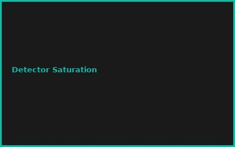
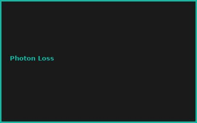
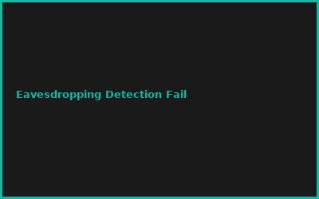
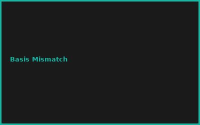

⚠️ Sicherheitshinweis (redaktionell ergänzt):
Der Umgang mit Laserdioden und Einzelphotonen-Detektoren birgt reales Risiko von Augenschäden. Nur mit geeigneter Laserschutzbrille (passend zur Wellenlänge/Laserklasse) und in kontrollierter Umgebung arbeiten. Diese Hardware-Stufe entspricht einem Graduierten-Forschungslabor, nicht einem gewöhnlichen Hobbyprojekt.
Kapitel 1: QKD Grundlagen (BB84)
- Photon Polarization Encoding
- Rectilinear & Diagonal Bases
- Eavesdropping Detection
- Key Sifting Process
Kapitel 2: Single Photon Sources
# Attenuated Laser + SPAD Detector
# BB84 Protocol Implementation
photon_source = 405nm_laser # DM-SPL
attenuation = -80dBm # Single photon regime
detector = Si_SPAD # 50%+ efficiency
Kapitel 3: E91 (Entanglement Protocol)
- Bell State Generation
- CHSH Inequality Testing
- Quantum Entanglement Verification
- Device-Independent QKD
Kapitel 4: Free-Space QKD
- Atmospheric Turbulence Compensation
- Satellite-Ground Links
- Quantum Repeaters
- Inter-City Secure Networks
Kapitel 5: Security Proofs
- Information-Theoretic Security
- GLLP Security Analysis
- Finite-Key Analysis
- Side-Channel Resilience
Kapitel 6: Integration & Standards
- Network Integration (Fiber)
- ETSI QKD Standardization
- Commercial QKD Systems
- Hybrid Classical-Quantum Networks
💡 PRO-TIPPS
🎯 Tipp: BB84 vor E91 lernen
Problem: E91 komplexer | Lösung: BB84 = einfacher Start
💰 BUDGET-HACKS (92% KOSTENLOS!)
💰 Hack: DIY mit Attenuiertem Laser
Original: Commercial QKD: €200K+ | Hack: DIY mit 405nm Laser + SPAD: €15K | Einsparnis: 92%
⚠️ FEHLER
❌ Fehler: Photon Detector Dark Counts
Was passiert: False positives = falsche Key | ✅ Lösung: Cooled SPAD + Gating
🌐 COMMUNITY
ETSI QKD, Quantum Internet Alliance, QuTech, International QKD Conference
📸 Fehler-Galerie



